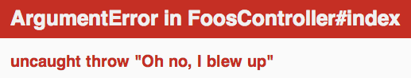
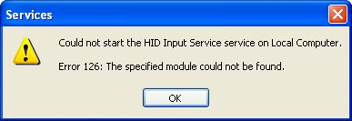
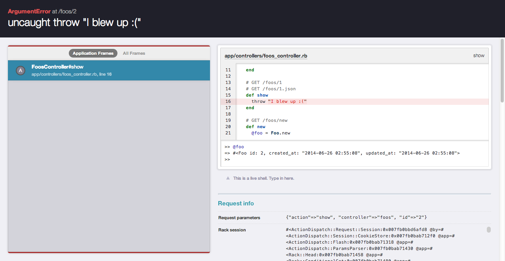

Debugging
The tools of the trade in Ruby/Rails
Megan Bowra-Dean
@megahbite
What is debugging?
- The act of finding "bugs" or defects in code and removing them.
- Popularised as a term by Grace Hopper when she found a moth in a mainframe.
Why do we need to debug?
- Machines do exactly what we tell them, and we're not perfect.
- Even if we're perfect, someone else might not be.
- Something is inevitably going to go wrong and our users will want it fixed.
So what do we do when we see this?
Or this?
Or even this?

Techniques, Tools and Concepts
Print debugging
- Only when we're really desperate.
- Generally only used these days in embedded systems (e.g. appliances)
Code
puts "We're about to do something that may be wrong"
this_function_doesnt_exist()
puts "We might not reach here"Output
We're about to do something that may be wrong ./print_debugging.rb:4:in `': undefined method `this_function_doesnt_exist' for main:Object (NoMethodError)
Stack traces
-
Instead of relying on us putting
printorputsstatements in our code everywhere, stack traces tell us exactly where our code broke. - Provides more context to us, allowing us to better decipher error messages.
NoMethodError - undefined method `edit_notes_investment_path' for #<#<Class:0x007f8d00b33168>:0x007f8d0d351e10>: actionpack (4.0.5) lib/action_dispatch/routing/polymorphic_routes.rb:129:in `polymorphic_url' actionpack (4.0.5) lib/action_dispatch/routing/polymorphic_routes.rb:135:in `polymorphic_path' app/helpers/campaigns_helper.rb:36:in `campaign_actions' app/datatables/investments_datatable.rb:2:in `campaign_actions' app/datatables/investments_datatable.rb:22:in `block in data' draper (1.3.0) lib/draper/delegation.rb:10:in `map' app/datatables/investments_datatable.rb:20:in `data' app/datatables/investments_datatable.rb:13:in `as_json' activesupport (4.0.5) lib/active_support/json/encoding.rb:50:in `block in encode' activesupport (4.0.5) lib/active_support/json/encoding.rb:81:in `check_for_circular_references' activesupport (4.0.5) lib/active_support/json/encoding.rb:49:in `encode' activesupport (4.0.5) lib/active_support/json/encoding.rb:34:in `encode' activesupport (4.0.5) lib/active_support/core_ext/object/to_json.rb:16:in `to_json' actionpack (4.0.5) lib/action_controller/metal/renderers.rb:90:in `block in <module:Renderers>'
Debug logs
- Log all console output into a file that we can examine for unexpected output.
- Where you'll often find stack traces from exceptions/errors
- In Rails projects will can be found in the "log" folder
Interactive consoles
- Common feature with dynamic languages like Python, Ruby, Node.js etc.
- Allow you to run a statement at a time and change parameters around to see what works
-
irbis built into Ruby,pryis a much better alternative. -
Most often encountered by Rails programmers when running
rails console
Debuggers
- Debuggers are one of the most important tools in our toolbelt.
- Allow us to set "breakpoints" in code that will pause a running program.
- When a breakpoint statement or mark is hit we can then examine the current state of the program.
- Often drop into an interactive console as talked about previously.
-
In Ruby/Rails is provided by the
debuggergem in Ruby versions < 2.0 and thebyebuggem in Ruby versions >= 2.0
Less Common or Ruby/Rails Specifc Tools
Online Error Tracking/Reporting Tools
- When we deploy our apps to a production system we often turn off a lot of debugging output or may not have access to logs
- Online tools like Raygun allow us to keep track of errors that occur in production.
- Includes our useful stack traces and also other program state.
- Can notify you through numerous communication channels
"Better Errors"
Better Errors is a gem for Rails that provides a better error page in your development environment.
Some things to think about
- How do we debug when the code is not running on our machine? — remote debugging
- How do we debug code that isn't our own?
- How do we debug when the code isn't available? (the difficulty is this is one reason why Open Source is so important)